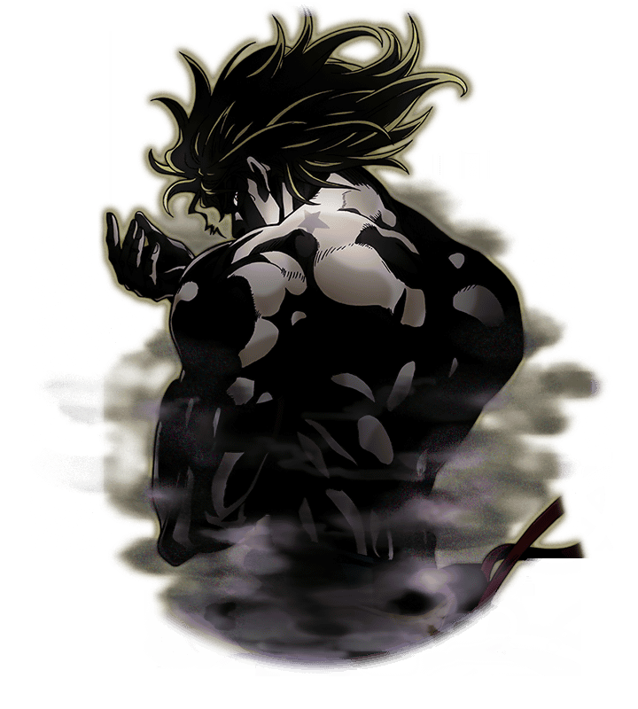
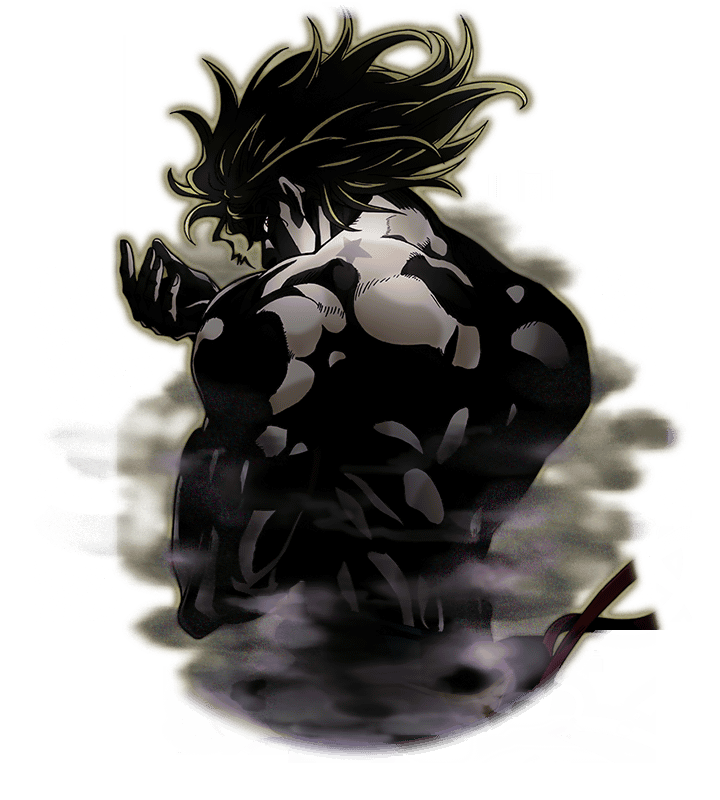

Tome as rédeas para controlar o seu próprio destino e alcance o céu!
Saudações. Sou Dio Brando, vampiro e usuário de stand. Meu objetivo é fazer com que todo ser vivo tenha plena consciência de seu próprio destino.
Saudações. Sou Dio Brando, vampiro e usuário de stand. Meu objetivo é fazer com que todo ser vivo tenha plena consciência de seu próprio destino.
